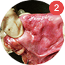
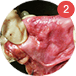

La prostatitis es una enfermedad de la cúal los hombres
se han descuidado durante muchos años
sin saber que se agudiza, destruye el cuerpo del hombre trayendo, una amenaza latente para la salud, la potencia e incluso la vida.
Según las estadísticas oficiales, uno de cada dos
hombres mayores de 20 años padece de prostatitis
crónica.
Demostrado:
Las cifras reales, según los expertos:
85% hombres mayores de 20 años sufren de prostatitis
crónica.
¡Atención!
La prostatitis crónica a menudo se desarrolla en forma latente, sin síntomas pronunciados.
El principal signo de prostatitis son los trastornos urinarios

hormigueo y dolor durante la
micción sentirse
devastado
incompleto
sensación de urgencia
tomar una Ducha (lavarse)
micción nocturna
más de una vez
gotas de orina
después de orinar
Otros signos de prostatitis:
- dolor en la uretra
en la parte inferior del abdomen - falta de deseo
sexual - erección débil y no expresada
- dolor durante el coito
- eyaculación precoz
- estado febril
hasta 39-40℃

 obstrucción de la vejiga
obstrucción de la vejiga   cistitis recurrente
 cistitis recurrente 
 absceso de próstata mortalidad invalidez
absceso de próstata mortalidad invalidez  absceso de próstata
absceso de próstata 
 pielonefritis
pielonefritis 
 sepsis
sepsis